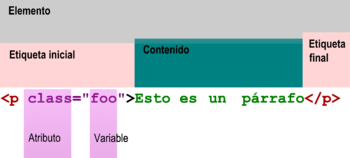

¿Qué es una etiqueta HTML?

HTML es un markup language, lo que significa que está escrito con códigos que puede leer una persona sin que sea necesario compilarlo primero. En otras palabras, el texto en una página web está «marcado» con estos códigos para dar instrucciones al navegador web sobre cómo mostrar el texto. Estas etiquetas de marcado son las propias etiquetas HTML. Cuando escribes código en HTML, estás escribiendo etiquetas HTML. Todas las etiquetas HTML están hechas con un número de partes específicas, incluyendo:
El hipertexto (HTML) es un lenguaje informático que forma la mayoría de las páginas web y plataformas online. HTML no se considera un lenguaje de programación, ya que no puede crear una funcionalidad dinámica. Sin embargo, los usuarios web pueden crear y estructurar secciones, párrafos y enlaces usando elementos, etiquetas y atributos. En la actualidad existen 142 etiquetas HTML disponibles que permiten la creación de varios elementos. A pesar de que algunos ordenadores nuevos ya no admiten algunas de estas, es importante tener constancia de la existencia de ellas. Sin embargo, el HTML ha ido evolucionando los últimos años. Para que nos hagamos una idea, la primera versión contaba solamente con 18 etiquetas. Desde entonces, cada nueva versión ha traído nuevas etiquetas y atributos. La actualización más importante fue la introducción en 2014 del HTML5. La principal diferencia entre ambas es que la nueva admitía nuevos tipos de controles de formularios. También incluía diversas etiquetas semánticas que describían mejor el contenido, como article, headers y footer.

¿Cómo funcionan las etiquetas HTML?
La mayoría de páginas web tienen varias páginas HTML diferentes. Por ejemplo, una página de inicio, otra de producto, otra de contacto, etc. Cada una de estas tiene HTML separados. Los documentos HTML son archivos que acaban con .html o .htm. Un navegador lee el archivo y muestra su contenido para los internautas puedan verlo. Como hemos comentado anteriormente, todas las páginas HTML contienen una serie de elementos HTML que a la vez disponen de diferentes etiquetas y atributos. Es decir, los elementos HTML son los componentes básicos de una página web. Una etiqueta contiene mucha información. Le indica al navegador dónde empieza y dónde termina cada elemento, mientras que un atributo describe las características. Los elementos HTML suelen dividirse en tres partes. Esta combinación de las tres crea un elemento HTML.
Otra parte fundamental de un elemento HTML son los atributos. Estos tienen dos secciones:
